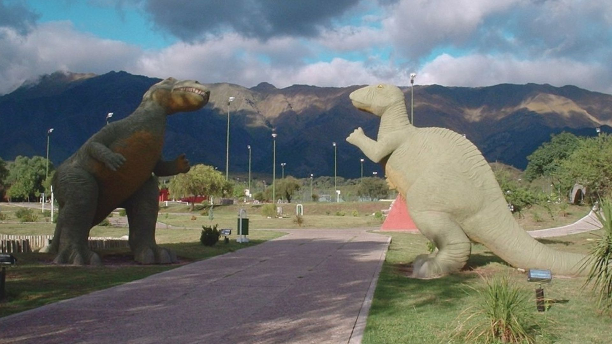
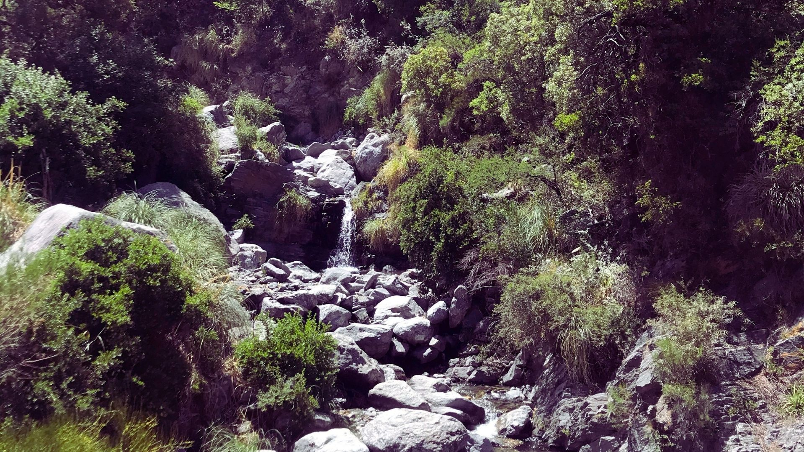

Bienvenidos a Merlo San Luis
Villa de Merlo, es una ciudad de la provincia de San Luis, en la zona central de Argentina, líder en calidad ambiental, y se ubicada al pie de las sierras Comechingones, lindando con Córdoba. Los amantes del turismo no pueden dejar de visitar Merlo, San Luis.A continuación marcamos algunos puntos claves para disfrutar de esta hermosa ciudad sin que el presupuesto sea un impedimento... Tercer Microclima del Mundo.El ambiente nos otorga buena oxigenación debido a un conjunto de factores que incide en la calidad de vida, la sensación de bienestar y mayor longevidad a quienes gozamos de estos beneficios en forma constante.
Disfruta nuestros bellos lugares Turisticos.¿Te los vas a perder?
1.Parque Recreativo Merlo
Localizado en la zona de Barranca Colorada, en la Villa de Merlo, sobre avenida del libertador San Martín.Si ingresa, por el oste, pasará por debajo de un gran puente de piedra (Arco de Barranca Colorada) y, si por el contrario, ingresa por el este (circuito chico) pasará por un rotonda "Plazoleta San Martín". Este parque polideportivo, brinda innumerables opciones recreativas y de esparcimiento para toda la familia. Cuenta con juegos para niños, canchas de tenis, fútbol, vóley y hockey. Además, hay una pileta para refrescarse en los días calurosos de verano, arboledas y dos réplicas de dinosaurios tamaño real respaldados por el cordon serrano de Comechingones. La entrada y el uso de las instalaciones, son gratuitas. Abierto todos los días de 8 a 21 hs.
Visita este hermoso Parque.
2. El Algarrobo Abuelo
El Algarrobo Abuelo es un antiguo árbol, de más de 800 años de antigüedad que, durante su larga existencia, fué testigo fiel de la historia provincial. De hecho el árbol ha nacido antes que nuestra República, convivió con los aborígenes, vivió la conquista y, posteriormente, la organización nacional.Gracias a quien el Algarrobo Abuelo es hoy conocido como un ejemplar histórico, es el gran poeta Antonio Esteban Agüero, con su “Cantata del Abuelo Algarrobo”,

Visita este hermoso Arbol
3. Pasos Malos
Este es un hermosos paraje donde quedará maravillado con la increíble vista y el sonido relajante de la naturaleza. Además, podrá disfrutar del arroyo Piedras Blancas y de un circuito gastronómico, donde degustará los platos regionales más deliciosos, entre ello el chivito. Otras de las actividades que pueden realizarse en este lugar es senderismo, puede ir por el sendero autoguiado hacia El Azud siempre recuerde,llevar agua, calzado cómodo y apropiado para caminar, no arrojar basura y respetar la fauna del lugar.

¿Te vas a perder estas hermosas vistas?
4.Casa del poeta Antonio Esteban Agüero
Esta casa/museo conserva en su interior una gran cantidad de material artístico y literario, perteneciente al poeta Antonio Esteban Agüero, funcionando como museo del recuerdo. Actualmente funciona como espacio cultural, ofreciendo a sus visitantes diferentes exposiciones artísticas, talleres de todo tipo y ciclos de cine independiente en su mayoría.

No te pierdas esta Casa/Museo
5. Reserva floro-faunística Rincón del Este
El principal atractivo que podemos encontrar a simple vista, en esta reserva, es la conservación del monte autóctono y el cuidado ejemplar de la flora y fauna del mismo. Se puede realizar avistamientos de todo tipo de aves locales (y fotografiar). Además, de contar con la amigable presencia del ya clásico zorrito colorado y el águila Mora con su magestuoso vuelo. Se ruega tener los cuidados necesarios para un ambiente de estas características. No arrojar basura ni realizar ruidos molestos, manteniendo así la calma y el orden natural de las cosas. La reserva está localizada a la vera del arroyo El Molino, de aguas frías y transparentes, en un marco de naturaleza esplendorosa. Acompañado por un guía, puede llegar al Salto del Tabaquillo, una gran cascada de 20 metros de altura en medio de las sierras de los Comechingones, rodeada de un imponente bosque de Tabaquillos.
Visita esta hermosa Reserva